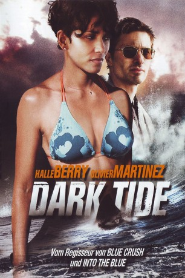

#2190 Dark Tide
 gesehen am 20.10.2015
gesehen am 20.10.2015
 
 IMDB-Wertung: 4.3 / 10
IMDB-Wertung: 4.3 / 10  Metascore: 23
Metascore: 23 
Kate Mathiesons Karriere als führende Hai-Expertin Südafrikas ist ins Stocken geraten, nachdem ihr Tauchpartner bei einer Exkursion von einem Hai getötet wurde. Ein Jahr ist seitdem vergangen und Kate war seit der tödlichen Attacke nicht mehr unter Wasser, da sie sich für den tragischen Unfall verantwortlich fühlt. Als die Bank Kates Boot beschlagnahmen will, bekommt sie Hilfe von ihrem Ex-Freund Jeff. Er unterbreitet Kate ein lukratives Geschäft: Sie soll eine Tauchtour für einen reichen Geschäftsmann leiten, der den ultimativen Kick im freien Tauchen mit Haien sucht. Das Ziel: der weltweit gefährlichste Tummelplatz der Haie: Shark Alley...
Jahr: 2012
Dauer: 114 Minuten
FSK:
Land: USA Studio: Row 1 ProductionsTonspuren: DTS - ,
Untertitel: Deutsch,
Auflösung: 1080p (1920x812) Größe: 8540 MB
Genre: Abenteuer, Drama, Thriller
Regisseur:  John Stockwell
John Stockwell
Drehbuch: Ronnie Christensen, Amy Sorlie, Amy Sorlie
Soundtrack: Mark Sayfritz
Darsteller:
 Halle Berry als Kate Mathieson
Halle Berry als Kate Mathieson Olivier Martinez als Jeff
Olivier Martinez als Jeff- Mark Elderkin als Tommy
 Ralph Brown als Brady
Ralph Brown als Brady- Sizwe Msutu als Themba
- Thoko Ntshinga als Zukie
- Henrik Vos als German Man
- Judith Kronenberg-Sarembock als German Woman
- Wayne Harrison als English Dad
- Josef Du Plessis als English Boy
- Jessica Taylor als English Mum
- Luke Tyler als Luke
- P.J. Van Der Walt als Poacher
- Gary Jacobie als Poacher
- Eugene Seloca als Poacher
- Chris Zuidema als Anti Poaching Officer
Datei: X:\2012(A-F)\Dark Tide (2012, FSK, 1920x812).mkv seit 19.10.2015
Festplatte: HD 2012(A-M)
 Es gibt insgesamt 102 Filme in der Gruppe '2012(A-F)'
Es gibt insgesamt 102 Filme in der Gruppe '2012(A-F)'